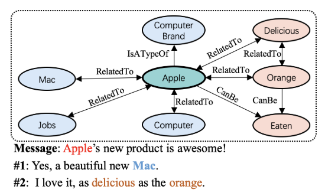
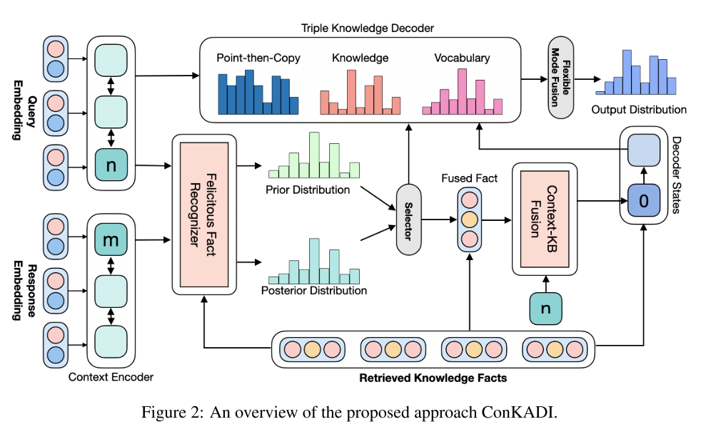
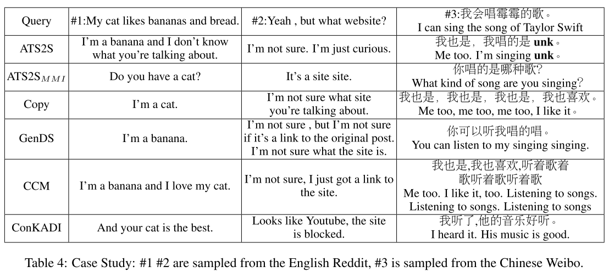

简介
今天来看一篇对话系统的文章，收录于2020年的ACL。这篇文章是常识对话模型（CCM）的后续工作，我之前粗读过一次，还有很多疑惑，今天正好借着这个机会细读一遍。在此之前，先梳理一下对话系统的发展历史。
对话系统发展简介
对话系统，即能够与人进行对话的计算机系统，是自然语言处理中的一个重要方向。在前神经网络时期，对话系统主要基于模板生成回复。即使是现在，仍由一些场景下在使用基于模板的回复生成。在2014年，seq2seq（Sequence to sequence）模型被提出。seq2seq提供了一种序列间进行转换映射的通用方法。此后，seq2seq被广泛用于各类序列任务，包含对话系统。但是seq2seq应用于对话系统任务时会有以下问题：
- 对同一输入，只能生成单一回复。而理想的对话系统间输入与回复间的关系应该是一对多的。
- 倾向于生成通用性回复（例如，我不知道）。
此后，构建能够生成多样性回复的对话系统一直是研究人员研究的重点。2017年，zhao等人将条件变分自编码器（Condition vae，CVAE）应用于对话生成，通过在隐变量分布中采样不同的隐变量，模型能够生成多样的回复。
另外，有研究指出，对话模型生成通用性回复的原因之一是语料中缺少人类拥有的知识背景，这使得模型无法学习知识进而理解对话。基于此，一部分工作开始探索在对话模型中引入外部知识。2018年zhou等提出的常识对话模型（CCM）就是这类研究的典型代表。
常识对话模型CCM虽然比传统模型取得了更好的效果，但是CCM在检索知识实体相关知识事实时，没有考虑到实体单词所在的上下文，而复杂实体单词的具体含义往往是由其上下文决定的。这就来到了本文要介绍的ConKADI。

研究方法
本文提出了：
- Felicitous Fact mechanism（恰当事实机制）帮助模型关注在上下文高度相关的知识事实。
- 上下文知识融合以及灵活模式融合技术，促进知识的集成。
ConKADI（Context Knowledge-Aware Diverse and Informative conversation generation model），别的不说，这个名字真的跟叠buff一样。。。模型的流程如下：
- 恰当事实机制根据知识实体词所在上下文计算得到知识事实的概率分布。（此过程中，使用真实回复作为后验来监督学习）。
- 上下文融合机制在解码之前将上下文与知识融合。
- ConKADI在灵活融合模式下生成三种类型的单词。
模型概览

主要由以下几部分组成：
- 知识检索器（Knowledge Retriever）：给定输入\(X\)，对于每一个单词\(x_i\)，检索\(x_i\)作为头实体或者尾实体的知识事实，若不为实体词，则返回一个空事实。
- 上下文编码器（Context Encoder）：使用双向GRU进行编码，特殊的是，GRU的输入加入了当前实体词的嵌入向量。
- 恰当知识识别器（Felicitous Fact Recognizer）：计算检索事实\(F=\{f_1,f_2,\dots,f_n\}\)上的概率分布\(z\)，计算过程如下:
\[ z_{post}=\eta(\phi(F\cdot W_{ft})\cdot\phi([{h^x_n}^\intercal;{h^y_m}^\intercal]\cdot W_{post}))^\intercal \]
\[ z_{prior}=\eta(\phi(F\cdot W_{ft})\cdot\phi({h^x_n}^\intercal\cdot W_{prior}))^\intercal \]
其中，\(\eta\)是softmax函数，\(\phi\)是tanh激活函数，\(F\in R^{l*(d_e+d_r+d_e)}\)是知识事实矩阵，\(W_{ft},W_{post},W_{prior}\)是训练参数。直观来看，上下文、知识事实都包含在公式中，但是也不好进一步解释公式的由来，更像是两部分拼凑在一起的。与VAE一样，在得到先后验分布后，使用KL散度作为损失函数\(\mathcal L_k\)，达到逼近先后验分布的效果。
- 上下文知识融合：为了增强解码器对知识背景的理解，将输入上下文与知识融合作为解码器的初始权重，即\({h^y_0}^\intercal=tanh([{h^x_n}^\intercal;f_z^\intercal]\cdot W_{init})\)
此外，为了保证\({h^x_n}^\intercal,f_z^\intercal\)是有意义的，模型中还引入了词袋损失（参考CVAE）。为了监督\(z_{post}\)的概率分布的计算，引入了监督的条件信号（参考CCM），二者之和为损失函数\(\mathcal L_f\)。
知识解码器
解码器同样是GRU，在解码时，会从以下三种类型的单词中选择进行输出：
- 词表单词
- 知识实体单词，计算过程如下：
\[ z_{d,t}=\eta(\phi(F\cdot W_{ft})\cdot\phi([{h^y_t}^\intercal;{u_{t-1}}^\intercal]\cdot W_{d}))^\intercal \]
\[ \gamma_t=sigmoid([{h^y_t}^\intercal;u_t^\intercal;c_t^\intercal]\cdot W_{gate})\in R^1 \]
\[ p_{k,t}=\gamma_t*z+(1.0-\gamma_t)*z_d \]
其中，\(c_t\)是注意力机制的结果，\(z_{d,t}\)也是同样方法计算得到的知识事实的概率分布，与\(z\)相比，\(z_{d,t}\)是动态的，而\(z\)是静态的，与CCM中的动/静态图注意力机制类似。之后，计算得到一个标量\(\gamma_t\)作为二者的相对比例，求和得到最终的实体单词权重。
- 复制单词。解码器可从输入中复制一个单词作为输出，计算过程如下：
\[ p_{c,t}=\eta(\phi(H^x\cdot W_{cs})\cdot\phi({u_t^c}^\intercal\cdot W_{ct})^\intercal) \]
\[ {u^c_t}^\intercal=[{h^y_t}^\intercal,{u_{t-1}}^\intercal,{c_t}^\intercal] \]
计算形式与前文知识事实概率分布的计算相似。
灵活模式融合
最终输出的概率分布为三种模式的加权和（其中，\((\gamma_{w,t},\gamma_{k,t},\gamma_{c,t})\)是由灵活模式融合计算得出的概率分布，即三者之和为1。）： \[ p_{out,t}=\gamma_{w,t}*p_{w,t}+\gamma_{k,t}*p_{k,t}+\gamma_{c,t}*p_{c,t} \] 这一部分损失函数为\(\mathcal L_n\)： \[ -\sum_t\lambda_tlogp_{out,t}(y_t|y_{t-1:1},X,F)+\frac{\mathcal L_m}{2} \] 其中，\(\mathcal L_m\)为解码器输出与真实回复间的交叉熵，\(\lambda_t\)为词表外单词（unk）的惩罚项权重： \[ \lambda_t= \begin{cases} \frac{1}{\#(unk\in Y)}^3,\ if\ y_t=unk\\ 1,\ otherwise \end{cases} \] 个人猜测思路是这样，如果\(y_t\)为unk，\(\lambda_t\)会更小，进而优化对应参数的速度会减慢。
Case Study
下文是论文中展示的回复样例，只看表格生成回复的效果还是不错的。
